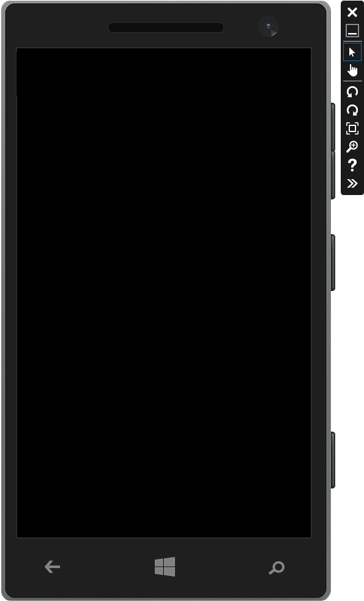

You get this from the emulator. Below this screenshot of the Emulator output is the exact code used in the home.html file in our MapApp project. As you can see the emulator does translate the page to exactly nothing in this case. Why? Well to be honest I can say that with certainty. I have been through the Microsoft documentation and I can't find a direct explanation from them as to why this behavior happens. We know it doesn't but I didn't ever find a lesson with the title, "This is how one integrates Bing maps into the Windows Phone using Javascript.
But I did manage to paste together a solution so onto Step Four to see how I did it.
<!DOCTYPE html PUBLIC "-//W3C//DTD XHTML 1.0 Transitional//EN" "http://www.w3.org/TR/xhtml1/DTD/xhtml1-transitional.dtd">
<html>
<head>
<title></title>
<meta http-equiv="Content-Type" content="text/html; charset=utf-8"/>
<script type="text/javascript"
src="http://ecn.dev.virtualearth.net/mapcontrol/mapcontrol.ashx?v=7.0"></script>
<script type="text/javascript">
function GetMap()
{
var map = new Microsoft.Maps.Map(document.getElementById("mapDiv"),
{credentials: "Your Bing Maps Key",
center: new Microsoft.Maps.Location(45.5, -122.5),
mapTypeId: Microsoft.Maps.MapTypeId.road,
zoom: 7});
}
</script>
</head>
<body onload="GetMap();">
<div id='mapDiv' style="position:relative; width:400px; height:400px;"></div>
</body>
</html>